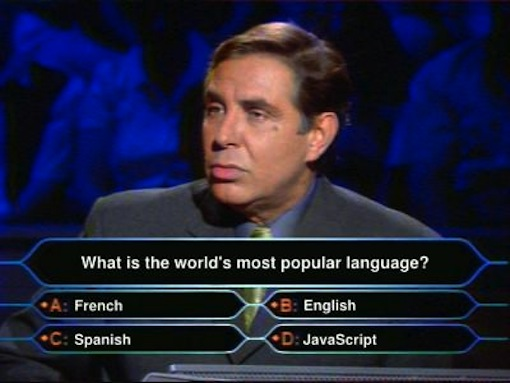
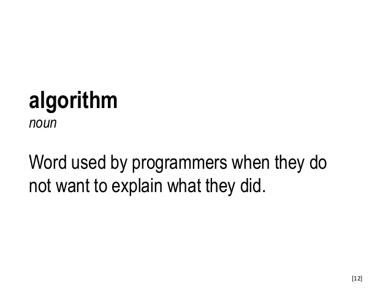
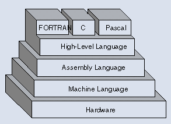
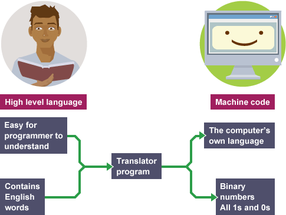
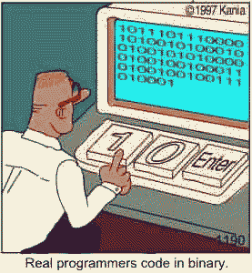
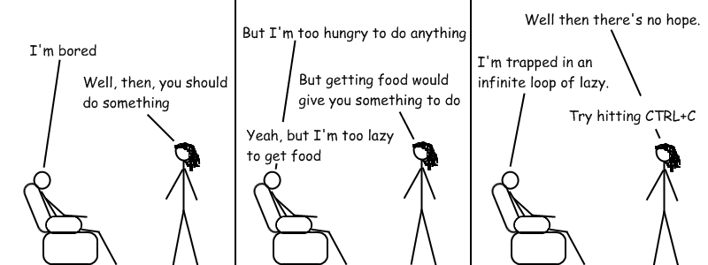

3. JavaScript
CENTRO | 2016
3.1 What is programming?
Simple, programming is write algorithms in a programming language.
Algorithms
A list of ordered steps whose purpose is do something, and must be understandable for those who will do (run).
Algorithms

Algorithms
3.2 Programming Languages
A programming language is an artificial language (with syntax and semantic) designed to communicate algorithms to a machine.
Abstract Levels
Abstract Levels
Abstract Levels
Compiled vs. Interpreted
Since the computer only "speak" machine code, we need to get a way
to translate top level programming language into low level machine code.
There are two ways:
- Compile. It translate source code into machine code through another program (compiler). The result is called object code or simply binary
- Interpret. Use another program (interpreter) that directly executes, i.e. performs, the code of the source code without previously compiling it.
Compiled vs. Interpreted

3.3 Javascript: the programming language of the web

Javascript: the programming language of the web
Javascript is an interpreted language, and its commonly abbreviated
JS.
Each browser has its own Javascript interpreter, also called engine.
Programs writed in Javascript are called scripts.
History
- 1995: At Netscape, Brendan Eich created "JavaScript".
- 1996: Microsoft releases "JScript", a port for IE3.
- 1997: JavaScript was standardized in the "ECMAScript" spec.
- 2005: "AJAX" was coined and the web 2.0 age begins.
- 2010: Node.JS was released.
- 2015: ECMAScript 6 was released.
Anatomy of a website
HTML (structure) + CSS (style) + JavaScript (logic and behaviour)

Executing JavaScript
To include JavaScript code in a web page it used the
<script> HTML tag.
<!DOCTYPE html>
<html>
<head>
...
</head>
<body>
...
</body>
</html>
The script tag can goes into any place of head or
body tags, and multiple scripts are allowed.
Executing JavaScript
In order to get a better organization of our projects, the
JS scripts can be written in separated files and reference them with
the src attribute.
<!DOCTYPE html>
<html>
<head>
...
</head>
<body>
...
</body>
</html>
The suffix *.js is the extension for the JS script files.
3.4 JS: Variables
What is a variable?
We need store data: score in a game, telephone in a contact book, etc.
A variable is a named value (or a value with meaning), that represent data.
The value of a variable can change, but its meaning cannot.
Also, the variables can be seen as value containers.

Syntax
To declare and initialize a variable, the following syntax is used:
// var name
var x;
// name = value
x = 5;
Or all in one statement:
// var name = value
var x = 5;
Reasign a value (notice the = assignment operator):
var x = 5;
x = 1;
Primitive Data Types
String: Sequence of characters.
var greeting = 'Hello Diego';
var greatUniversity = "CENTRO";
var myAge = 5;
var myDebt = 9.10;
var catsAreBest = true;
var isRaining = false;
var absoluteTruth;
Weakly typed (loosely typed)
JS is a weakly typed language. It means that you should
not specify the data type when a variable is declared.
JS figures out the type based on value, and the type can change.
var myName = 'Diego';
myName = 2;
myName = true;
3.5 JS: Comments
Comments are statements ignored by computer and is aimed to human can understand not obvious code.
// Single line comments
var x = 4;
/*
Comments in multiple lines (for long descriptions)
*/
3.6 JS: Functions
Often we want to do a task several times, and is very annoying and
confusing write the same piece of code repeatedly.
Functions "encapsulate" a task, that we view as a single line of code.
The functions make the code more readable (add abstract layer)
and reusable.
Functions
- Are "self contained" modules that accomplish a specific task (SINGLE RESPONSABILITY).
- Usually "take in" data, process it, and "return" a result.
- Once is written, it can be used over and over and over again.
- JS provide many built in functions.
- We don't care how a function does what it does, only that it "does it"!
Syntax
Definition:
function sayHello () {
console.log('Hello!');
}
sayHello();
Arguments
Functions, could need data to perform the desired task.
These data are called arguments, and works like pre-defined variables
in the function.
function addNumbers(num1, num2) {
var result = num1 + num2;
console.log(result);
}
addNumbers(7, 21);
Return values
function addNumbers(num1, num2) {
var result = num1 + num2;
return result; // Anything after this line won't be executed
}
var sum = addNumbers(5, 2);
var biggerSum = addNumbers(2, 5) + addNumbers(3, 2);
var hugeSum = addNumbers(addNumbers(5, 2), addNumbers(3, 7));
Variable scope
The JS variables only live in the block of code (or function) where
were defined.
It means that they are visible in the function where they're defined.
The parts of code where a variable is visible is called the "variable scope".
Local scope
function addNumbers(num1, num2) {
var result = num1 + num2;
console.log("The result is: " + result);
}
addNumbers(5, 7);
console.log(result);
Global scope
var result;
function addNumbers(num1, num2) {
result = num1 + num2;
console.log("The result is: " + result);
}
addNumbers(5, 7);
console.log(result);
Functions as variables
JS is a "first-class" language: support treat the functions like a variable.
function mistery(otherFunction, a, b) {
return otherFunction(a) + otherFunction(b);
};
function g(x) {
return x * x;
}
var f = function(x) {
return x + x;
}
mistery(g, 4, 9);
mistery(f, 4, 9);
3.7 JS: Flow control
The last code bender.

Flow control

3.6.1 Conditionals (if)
The programs need to take decisions (execute or not a bunch of code).
These decisions are based on a condition.
A condition is a question whose answer only have two values: true or
false.
With the if statement JS make a conditional.
if (condition) {
// statements to execute
}
Example (if):
var x = 5;
if (x > 0) {
console.log('x is a positive number!');
}
if (isRaining()) {
useUmbrella();
}
Comparision operators
var n = 28;| Operator symbol | Name | Example |
|---|---|---|
| === | Strict equality | n == 28 n === '28' |
| !== | Strict inequality | n !== 28 n !== '28' |
| > | Greater than | n > 25 n > 30 |
| < | Lower than | n < 31 n < 23 |
| >= | Greater or equal than | n >= 28 |
| <= | Lower or equal than | n <= 28 |
Logical operators
var a = 4;
var b = -2;
| Operator symbol | Name | Example |
|---|---|---|
| && | AND | a > 0 && b < 0 4 > 0 && -2 < 0 |
| || | OR | a > 0 || b > 0 4 > 0 || -2 > 0 |
| ! | NOT | !(a === b) !(a < 0) |
Can combining together multiple conditions (be careful with the parenthesis):
var myAge = 28;
if ((myAge > 0 && myAge < 5) || (myAge > 70)) {
console.log('MB free!');
}
Using values as false
The empty string (''), the number 0, undefined and
null act as false.
var name = '';
if (name) {
console.log('Hello, ' + name);
}
var points = 0;
if (points) {
console.log('You have ' + points + ' points');
}
var firstName;
if (firstName) {
console.log('Your name is ' + firstName);
}
Complete conditionals: if-else
To make a complete conditionals: code that is executed when the condition is satisfied and code when not.
var age = 18;
if (age > 16) {
console.log('Yay, you can drive!');
} else {
console.log('Sorry, but you have ' + (16 - age) + ' years til you can drive.');
}
Multiple conditionals: if-else if-else
var age = 20;
if (age >= 35) {
console.log('You can vote AND hold any place in government!');
} else if (age >= 25) {
console.log('You can vote AND run for the Senate!');
} else if (age >= 18) {
console.log('You can vote!');
} else {
console.log('You have no voice in government!');
}
3.6.2 Iterations (while)
Repeat a task multiple times is make iterations.
Are two ways to view the iterations: until a condition it no longer
satisfied or counting.
For the first way, JS use the statement while.
while (expression) {
// statements to repeat
}
var x = 0;
while (x < 5) {
console.log(x);
x = x + 1;
}
BEWARE INFINITE LOOPS
3.6.3 Iterations (for)
The other way to make iterations is counting.
for (initialize; condition; update) {
// statements to repeat
}
for (var i = 0; i < 5; i = i + 1) {
console.log(i);
}
Break a loop
To prematurely exit a loop, use the break statement.
for (var current = 100; current < 200; current++) {
console.log('Testing ' + current);
if (current % 7 == 0) {
console.log('Found it! ' + current);
break;
}
}
3.8 JS: Arrays
For hold multiple values in one single variable we can use arrays.
An array is a type of data-type that holds an ordered list of values,
of any type.
Syntax
var arrayName = [element0, element1, ...];
var arrayName = [];
var rainbowColors = ['Red', 'Orange', 'Yellow', 'Green', 'Blue', 'Indigo', 'Violet'];
var raceWinners = [33, 72, 64];
var myFavoriteThings = ['Play guitar', 666, 'Web media course'];
The length property reports the size of the array:
console.log(courseStudents.length);Array access
You can access items with "bracket notation". The index starts at 0.
var arrayItem = arrayName[indexNum];
var rainbowColors = ['Red', 'Orange', 'Yellow', 'Green', 'Blue', 'Indigo', 'Violet'];
var firstColor = rainbowColors[0];
var lastColor = rainbowColors[6];
Modification
You can also use bracket notation to change the item in an array:
var myFavoriteThings = ['Play guitar', 666, 'Web media course'];
myFavoriteThings[0] = 'Drunk beer';
myFavoriteThings.push('Coding');
3.9 JS: Objects
One of the most abstract things of the modern code is the concept
of object-oriented programming. An object in programming language
can be compared to objects in real life.

Objects in JavaScript
JS is designed on a simple object-based paradigm.
An JS object is a collection of properties, and a property is an
association between a name (or key) and a value.
A property of an object can be seen as a variable attached to the
object.
var object = {};
var object = {
property1 : value1,
property2 : value2
};
Example of objects
var aboutMe = {
hometown: 'CDMX, México',
hair: 'black',
wearGlasses: true,
birthday: { day: 2, month: 'September' }
};
var cat = {};
cat.furColor = 'orange';
Access (dots and brackets)
Two ways to retrieve the values of an object: with dot and brackets.
var aboutMe = {
hometown: 'CDMX, México',
hair: 'black',
wearGlasses: true,
birthday: { day: 2, month: 'September' }
};
var myHometown = aboutMe.hometown;
var myHairColor = aboutMe['hair'];
Changing (dots and brackets)
var aboutMe = {
hometown: 'CDMX, México',
hair: 'black',
wearGlasses: true,
birthday: { day: 2, month: 'September' }
};
aboutMe.wearGlasses = false;
// Add attributes
aboutMe.gender = 'male';
// Remove attributes
delete aboutMe.gender;
Array of objects
var myPets = [
{
name: 'Lizzie',
type: 'dog',
bathDays: 0,
age: 6
},
{
name: 'Daemon',
type: 'cat',
age: 1
}
];
Object methods
Since we can put any type of data as a value of attribute, we can
put... FUNCTIONS!!!!!
Object attributes that are functions are called methods.
var myCat = {
name: 'Daemon',
type: 'cat',
age: 1,
furColor: 'grey',
meow: function() {
console.log('meowww');
},
sleep: function (numMinutes) {
for (var i = 0; i < numMinutes; i++) {
console.log('z');
}
}
};
myCat.meow();
myCat.sleep(10);
Object methods
myCat.eat = function (food) {
console.log('Yum, I love ' + food);
};
myCat.eat('Tia helen');